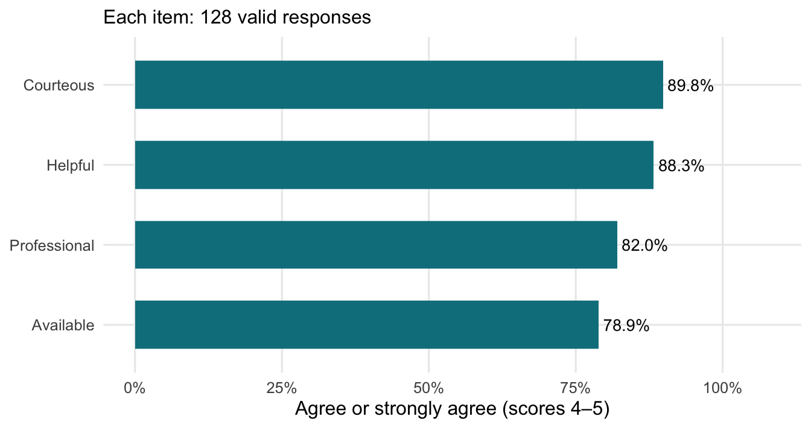
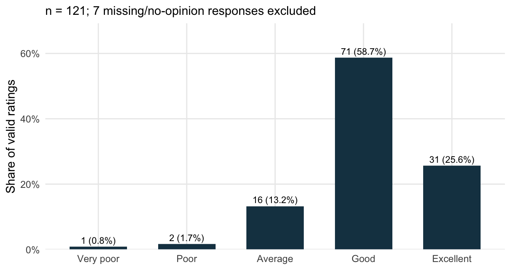
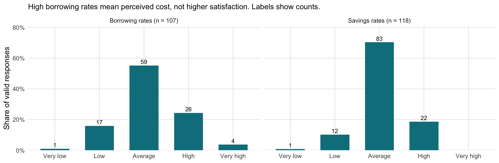
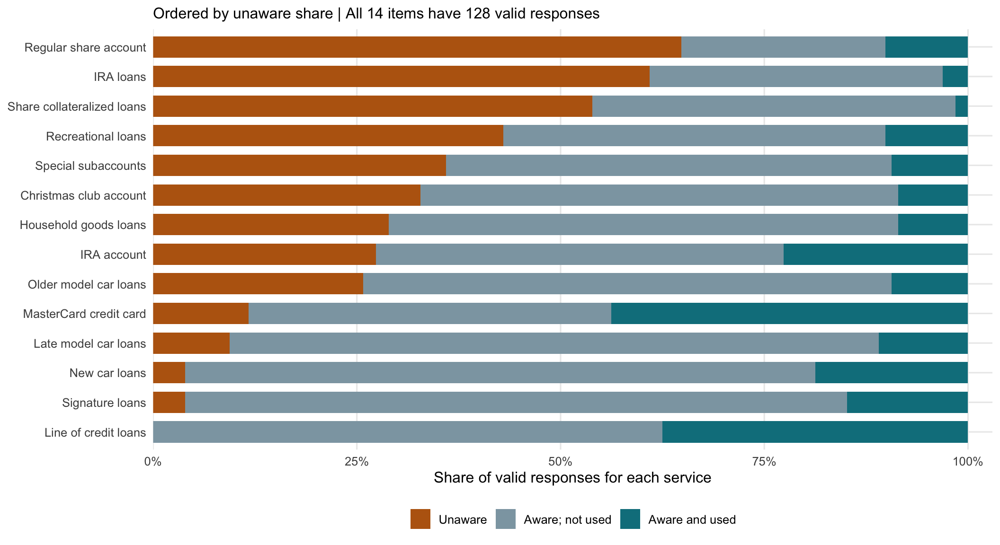

Records in teaching file
128
Employee rating | 128 complete records
4.21 / 5
Overall good/excellent | 102 of 121 valid ratings
84.3%
Current credit union loan | 58 of 128 yes/no responses
45.3%


| Area | Statement | Valid n | Mean / 5 | Agree / strongly agree |
|---|---|---|---|---|
| Employee | Available | 128 | 4.08 | 78.9% |
| Employee | Courteous | 128 | 4.35 | 89.8% |
| Employee | Helpful | 128 | 4.31 | 88.3% |
| Employee | Professional | 128 | 4.08 | 82.0% |
| Service / loan | Financial information confidential | 128 | 3.95 | 78.1% |
| Service / loan | Loan rates lower than others | 128 | 3.06 | 29.7% |
| Service / loan | Prompt loan processing | 128 | 3.72 | 60.2% |
| Service / loan | Services meet member needs | 128 | 3.59 | 59.4% |
| Service / loan | Simple loan application | 128 | 3.46 | 57.8% |

Availability has the lowest agreement of the four employee items. I’d ask members when they had trouble reaching someone before suggesting a staffing or scheduling change. These are historical teaching data, so this isn’t a report on a credit union’s current performance.

| Service | Valid n | Unaware | Aware; not used | Used | Unaware (%) | Used (%) |
|---|---|---|---|---|---|---|
| Regular share account | 128 | 83 | 32 | 13 | 64.8% | 10.2% |
| IRA loans | 128 | 78 | 46 | 4 | 60.9% | 3.1% |
| Share collateralized loans | 128 | 69 | 57 | 2 | 53.9% | 1.6% |
| Recreational loans | 128 | 55 | 60 | 13 | 43.0% | 10.2% |
| Special subaccounts | 128 | 46 | 70 | 12 | 35.9% | 9.4% |
| Christmas club account | 128 | 42 | 75 | 11 | 32.8% | 8.6% |
| Household goods loans | 128 | 37 | 80 | 11 | 28.9% | 8.6% |
| IRA account | 128 | 35 | 64 | 29 | 27.3% | 22.7% |
| Older model car loans | 128 | 33 | 83 | 12 | 25.8% | 9.4% |
| MasterCard credit card | 128 | 15 | 57 | 56 | 11.7% | 43.8% |
| Late model car loans | 128 | 12 | 102 | 14 | 9.4% | 10.9% |
| New car loans | 128 | 5 | 99 | 24 | 3.9% | 18.8% |
| Signature loans | 128 | 5 | 104 | 19 | 3.9% | 14.8% |
| Line of credit loans | 128 | 0 | 80 | 48 | 0.0% | 37.5% |
Regular share accounts and IRA loans have the largest unaware shares in this prepared file. I’d check the question wording and coding first, especially because the regular share account result seems surprising. I’ve kept the values as supplied.
Knowing about a service and choosing not to use it is different from never having heard of it. I’d ask about members’ needs and reasons for nonuse before deciding what information to send them.
This dashboard uses data/case31_prepared.xlsx, an unchanged copy of Case 31 Data_efcu_Prepped.xlsx supplied in the course repository.
Source: Jae Min Jung, Employees Federal Credit Union Case, CC BY 4.0. I used the instructor’s preparation QMD to check the labels and recodes, then made the summaries, charts, and dashboard pages shown here.
The workbook has 128 rows. The accompanying printed case describes 125 returns, with two excluded, implying 123 usable returns. I couldn’t resolve that difference from the supplied materials, so I use the workbook’s 128 records and don’t calculate a survey response rate.
How to read the measures| Measure | Fields and definition |
|---|---|
| Employee items | q3–q6: courteous, helpful, professional, available. 1 strongly disagree to 5 strongly agree. |
| Employee composite | at_emp in the prepared file is each record’s mean of the four employee items. I average that column; all four items are complete here. |
| Service / loan agreement | q30–q34: 1 strongly disagree to 5 strongly agree. Agreement percentage combines 4 and 5. |
| Overall management/operation | Prepared q37r: 1 very poor to 5 excellent. Good/excellent combines 4 and 5, among valid ratings. |
| Savings and borrowing rates | Prepared q7r, q8r: 1 very low to 5 very high. Borrowing-rate direction is not a satisfaction scale. |
| Awareness and use | Prepared q13r–q26r: 1 unaware, 2 aware but not used, 3 aware and used. |
| Current credit union loan | q27: 1 yes, 2 no; any missing or no-answer code is excluded from the yes/no denominator. |
Prepared fields ending in r are already recoded; this dashboard does not reverse them again. Each percentage uses the valid answers for that question. Missing answers stay missing. For the rate and overall questions, blanks in the prepared file include no-opinion/no-answer responses; I can’t tell those reasons apart from the blank cells alone.
Agreement combines scores 4 and 5. Each employee, service-agreement, and awareness item has 128 valid answers. In the awareness table, the three response columns are counts; the last two columns show percentages.
How many answers went into each result?| Measure | File records | Valid answers | Missing / excluded |
|---|---|---|---|
| Employee average | 128 | 128 | 0 |
| Savings rates | 128 | 118 | 10 |
| Borrowing rates | 128 | 107 | 21 |
| Overall management/operation | 128 | 121 | 7 |
| Current loan status | 128 | 128 | 0 |
The charts describe the records in this file. They don’t tell me what caused a rating or whether all members would answer the same way. I show rating distributions and agreement percentages alongside the means so readers can see more than one average.
Before using these results for outreach, I’d check the sample count and coding, confirm the services offered, and ask why members haven’t used them.
The dashboard is rendered with R and Quarto. Its plots are static; the page navigation and tabs work in the browser without a Shiny server.